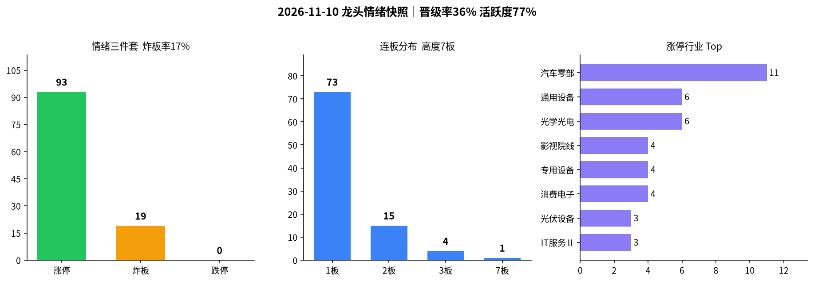

交易日 2026-11-10（周二） · 目标交易日 2026-11-11（周三） · 启动初期·汽车零部晋级
情绪：启动初期 涨停 93 · 跌停 0 炸板率 17.0% · 高度 7板| 票 | 昨动作 | 今收盘涨跌幅 | 判定 |
|---|---|---|---|
| 603121 华培动力 | 开多条件（首选） | +10.02%（2板，竞价+2.67%符合） | 对 |
| 603286 日盈电子 | 开多条件（备选） | +10.01%（2板，午后炸2回封） | 部分对 |
| 冰山 / 腾达 / 泰尔 | 只观察（默认可升级） | 均+10%晋级2板；竞价一字或大高开，不升级 | 对（纪律） |
| 002578 闽发铝业 | 不加（6板） | +9.98%（7板，午后才封） | 对（纪律） |
| 002708 光洋股份 | 不加（脏板） | +10.01%（2板；竞价高开+7.06%不追） | 对（纪律） |
| 雪人 / 东方创业 / 红太阳 | 不加 | +0.94% / +4.60% / −1.09% | 对 |
| 旧主线残留 | 不加 | 永臻脏首板+10%；通富高开回落+3.0%；其余未板或走弱 | 对 |
一句话：首选华培竞价符合且干净晋级2板，指令有效；观察组与光洋虽收板，但都是一字/大高开，按规则不加。改进（未回测）：启动日对一字/大高开仍不追，次日可把已确认的干净2板升为开多首选；备选票午后炸≥2不再补仓。
涨停 93（周一54↑）、跌停 0（周一1↓归零）、晋级率 36.4%（周一28.1%↑）、炸板率 17.0%（周一44.9%↓骤降）、乐咕活跃度约 76.6%（周一约39.1%↑），红盘约 76.7%；连板高度 7板仍仅闽发铝业杂毛独苗，但出现3板梯队 4 家（非主线）+ 2板 15 家；汽车零部扩至 11 家（4只晋级2板）、通用设备 6 家（4只晋级2板）——定性 启动初期。尚未到主升：主线未出3板中军，高度龙无主题辨识。默认偏进攻但仓位仍克制，禁追一字高位与脏板。
今日非高潮/退潮，不触发情绪→路线2风险过滤。
| 指标 | 数值 | 备注 |
|---|---|---|
| 涨停家数 | 93 | 已剔 ST / 北交所；东财 raw93→clean93；乐咕真实涨停≈89 |
| 跌停家数 | 0 | 跌停池空；乐咕真实跌停=0 |
| 炸板家数 | 19 | 炸板池 clean19 |
| 炸板率 | 17.0% | 炸板/(涨停+炸板)=19/112；较周一44.9%明显改善 |
| 连板高度 | 7板 | 仅闽发铝业 |
| 连板结构 | 7板 1 / 3板 4 / 2板 15 / 1板 73 | 断层：无4–6板；3板4家非主线 |
| 昨日涨停数 | 55 | previous 池 clean（周一涨停池54，本池多出亚玛顿） |
| 晋级数 / 晋级率 | 20 / 36.4% | 口径同周一：previous∩今日涨停池 |
| 高度/主线样本 | 闽发7板午后才封；华培/泰尔/光洋/金杯干净2板；日盈、冰山脏2板 | |
| 两市成交额 | 约 15048亿（新浪：上证≈6739.5 + 深成≈8308.6；周一约14826↑） | |
| 涨停池成交额 | 约 564亿（仅涨停标的，周一约309↑） | |
| 红盘占比 | 约 76.7%（乐咕上涨4002 / 下跌1073 / 平盘143；活跃度76.59%） | |
读表一句话：跌停归零 + 炸板率腰斩 + 晋级/活跃度同步抬升 = 启动信号；主线已走到2板确认，但高度仍是杂毛、主线尚未出3板——明日只接力干净2板/新首板中军，不接力7板、不碰脏板。

附图：涨停 / 炸板 / 跌停柱状 + 连板分布 + 行业集中（emotion_20261110.png）
光学光电6家但2板盛洋炸5、其余多为午后首板，不当主仓。影视/游戏有慈文、文投等早封样本，缺连板梯队，只旁观。消费电子4家均偏午后，更弱。
7板：闽发铝业（002578）—— 高开后回落，午后14:13才封，无主线辨识，不加。
3板：东方新能（电力一字）、日出东方（厨卫一字）、大东方（零售）、龙江交通（铁路，炸11·脏）—— 非同题材、与主线无关，不接力当主仓。
主线判断依据 = 涨停池行业集中度 + 封板时间/是否回封；概念涨幅榜未作为主论据。
情绪 = 启动初期 → 专项总仓建议 8%～≤12%（较昨日8%略上调，未回测）；同时持仓建议 0～2 只；不追一字高位、不接力 7板与非主线3板、不博弈脏板回封。
| 标的 | 603121 华培动力（首选）/ 002347 泰尔股份（备选）/ 600609 金杯汽车（备选）；排除光洋、日盈、冰山 |
|---|---|
| 动作 | 开多条件 |
| 进场 | 竞价平开～高开≤3%且有买盘；低开＞2%或竞价砸盘 → 不加。弱转强（回封干净、跟风未炸扩散）可补一点。不追高开＞5% 或一字。 |
| 止损 | 跌破当日分时低点或开板后30分钟无法回封 → 走 |
| 目标 | 看能否晋级3板 / 板块是否继续扩容 |
| 仓位 | 单票 ≤8%，两票合计 ≤12% |
| 原因 | 启动初期主线已有2板确认；华培是昨指令验证过的干净样本 |
| 作废 | 竞价同板块多数低开＞3%；开盘后跟风大面积炸板；跌停重新扩散≥5家 |
| 标的 | 000678 襄阳轴承（量能优先）/ 603809 豪能股份 / 002870 香山股份；光洋股份仅观察不升级 |
|---|---|
| 动作 | 只观察；竞价平稳（平开～高开≤3%）且板块未炸扩散，才允许最强1只升为极轻开多（≤5%） |
| 仓位 | 默认 0%；升级后单票 ≤5%，与指令1合计仍 ≤12% |
| 原因 | 新首板里襄阳更像中军候选，先看能否晋级2板再动手 |
| 作废 | 同指令1；或午后杂毛主导该板块成交 |
| 动作 | 不加 |
|---|---|
| 仓位 | 0% |
| 原因 | 高度杂毛独苗，无主线；今午后才封，启动期不接力断层高度 |
| 标的 | 东方新能 / 日出东方 / 大东方；龙江交通（炸11，尤其不加） |
|---|---|
| 动作 | 不加 |
| 仓位 | 0% |
| 原因 | 3板但不在汽车/设备主线，题材分散；不把非主线高度当空间龙 |
| 标的 | 永臻 / 浙文 / 协鑫 / 通富 / 华创 / 先导 / 贝特利 |
|---|---|
| 动作 | 不加（若仍持残留短线仓 → 反抽减/清） |
| 仓位 | 0% |
| 原因 | 辨识仍弱；永臻今日脏首板是脉冲，不视为主线复活 |
| 标的 | 日盈电子、冰山冷热、宁波华翔、东方环宇、安泰集团、盛洋科技、腾达科技，以及任何炸板≥4次回封票 |
|---|---|
| 动作 | 不加 |
| 仓位 | 0% |
| 原因 | 启动初期应挑干净板，脏板/午后回封胜率更差 |
20261110；乐咕活跃度交叉；个股与两市成交额来自新浪。晋级口径与 11/09 一致（previous∩当日涨停池，20/55）。数字见 data/*_20261110* / metrics_20261110.json。未编造。